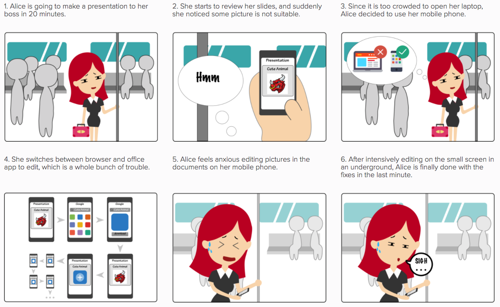
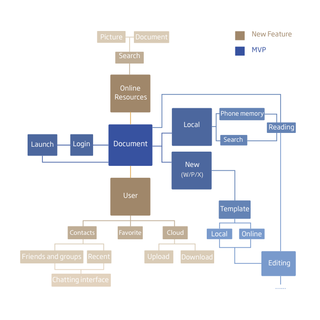
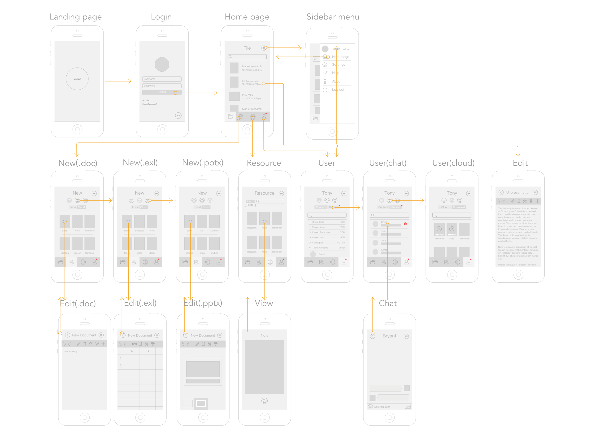
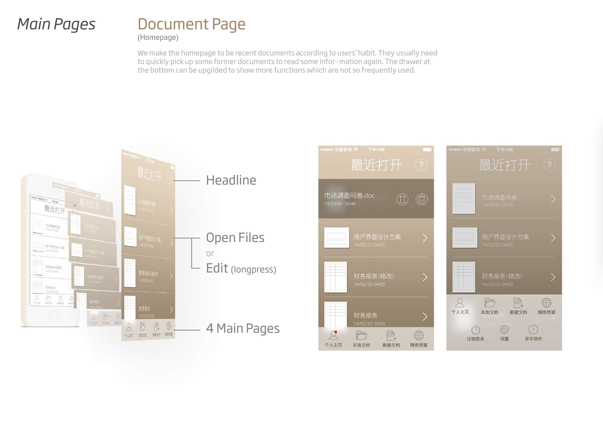
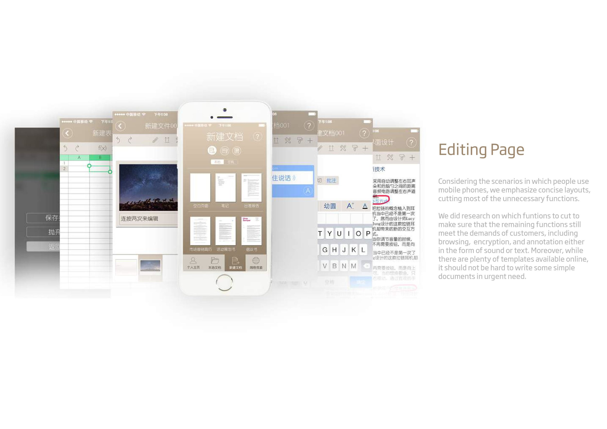
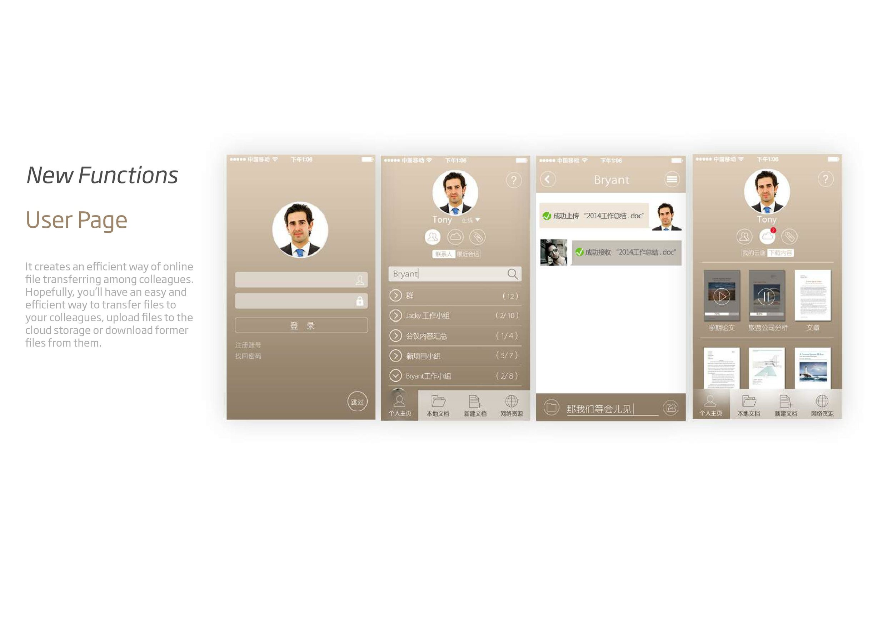
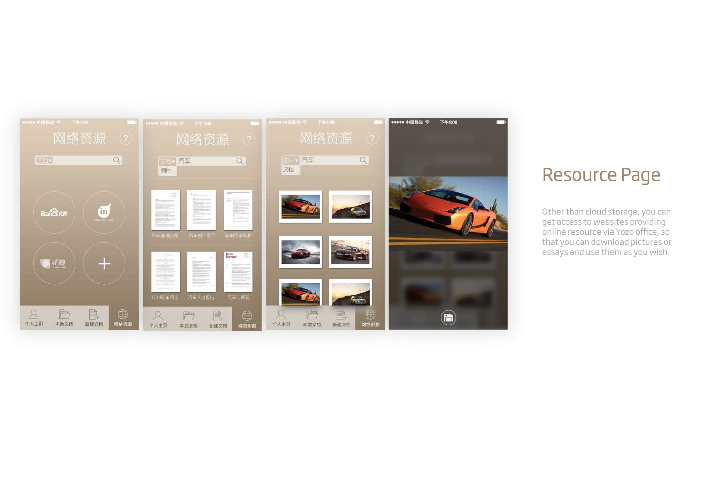
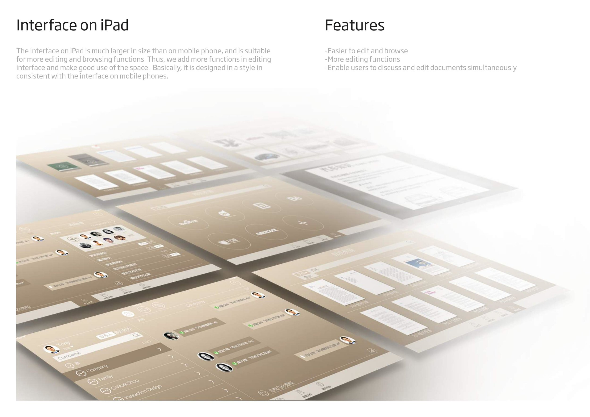
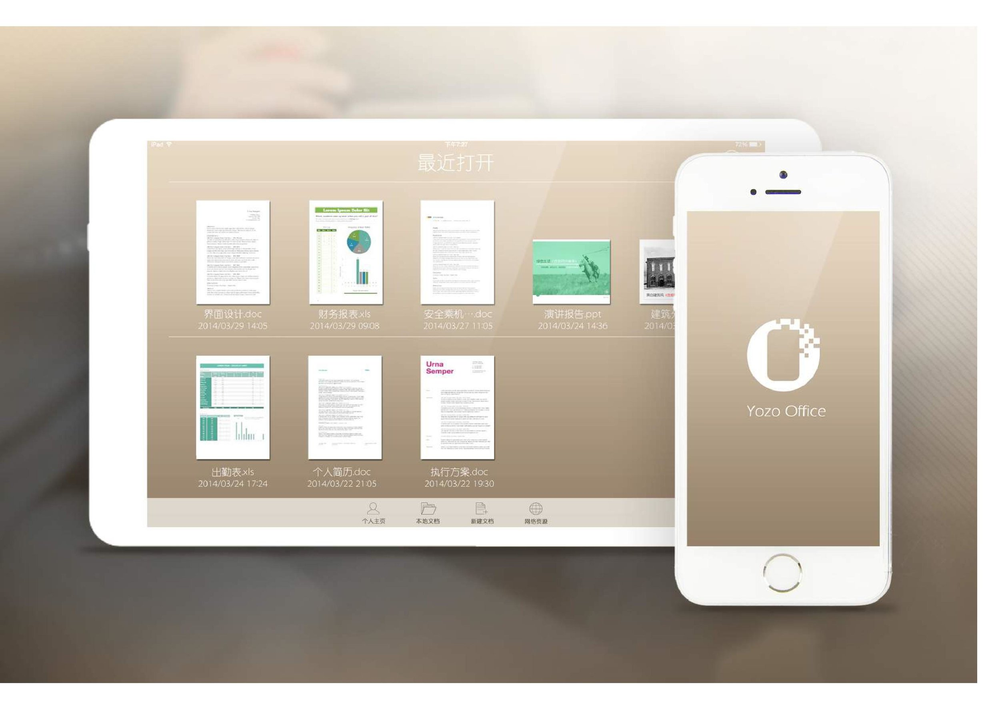

YOZO OFFICE
- Product Design (major intern project @Uber)
Background
YOZO Office is a mobile office app that provides efficient online collaboration experience and easier editing with online resources.
My Role
I was the product lead of our team of 4 product design interns, mentored by 2 senior designers.
We designed a new version of YOZO Office app targeting young white-collar workers, featuring semi-professional business style, providing efficient online collaboration experience and easier access to online resources. I delivered 20+ interfaces, 1 poster, guidance pages, 10+ document templates and a video that displays interaction among pages.
RESEARCH
Problem Scope
In 2014, YOZO wants to develop an Office App that appeals to the younger generation, yet still looks professional. Through research on market positioning, what the younger generation of businessman and white collar workers thinks, etc., the 2 major problems we encountered were as following:
Poor online collaboration experience
Hard to make quick fix of documents on mobile terminals.
Storyboard
Primary Persona

Alice Chen
Age: 24
Job:Graphic Designer
Education: B.A. Visual Design
Location: Wuxi
Working Habit:Works in office all day long; Needs to transfer files among colleagues; Often makes slides for presentations and pitches
Goal: Be more efficient in making slides, and able to make slight fixes fast and easy even when there is no laptop nearby.
"Sometimes when I am reviewing my presentation slides on mobile device, I don't want to open my laptop to make small adjustments. I want it to be more convenient to make slides on my iPad or iPhone."
"I like clean and friendly interface, for it gives you good mood to work with it."
Secondary Persona
Sam Wang
Age: 35
Job:Sales Manager
Education: M.S. Industrial Engineering
Location: Shanghai
Working Habit:Spends long periods of time on the road(airplane, car) to have business meetings; Handles multiple documents cooperatively with others at the same time.
Goal:Have good reputation among colleagues. Be comfortable and efficient in reading/editing/commenting documents wherever he is.
"I always have to handle documents on the road, checking bills and orders. I have to read fast, comment on the documents and send them to my subordinates to make fixes and communicate with other departments."
"When younger colleague talk about me, I want them to say, 'Oh he is super professional, and very cool, just like a cool elder brother at work', not 'this guy is a walking cliche'."
Competitive Analysis
In general, dark colors create a feeling of business and steadiness, while light colors gives the product a relaxing and fresh feeling. In our communication with the designers and product managers of the company, we all agree to design an office software with semi-professional style, which would fit most conditions.
Design
Information Architecture
We comb through the interaction flow of YOZO office according to the existing app. Afterwards, we brainstorm about what functions to add in order to make the app more usable and solve the problems of users. We decide to apply cloud technology to make the experience more convenient and safe for users to use files. At last, in addition to the original part, we add new parts which we will work on in the chart, including online resources and user page.
Design Guideline
- Clear system status (where you are in the app)
- Easy access to the previous page (confidence in using the app)
- Simple, simple, simple (UX, UI, Interaction/Animation)
User Flow
Problem Solving Features
- Rapid access to vast online resources on the editing page and quick attaching
- Access to vast online resources inside the app
- Allow accessing mailing list to share files easily among colleagues
- Easy file sharing in customized groups
- Easy way to comment on documents wherever and whenever
INTERFACES
     Refinement
Usability Testing & Expert Evaluation
When I look back at this project in 2016, I find some flaws that are hard to ignore when I test the interfaces myself. Thus I test with 3 participants, and then evaluate the interfaces with 10 Heuristics. Based on the following justifications, I refined the wireframes and user flow based on the wireframes.
Homepage
1. Integrate the features of the hidden menu into a “Drawer Menu” with the icon on the top right corner.
Both the pull-up motion of tabs and question mark are not well received. The pull-up motion is hard to be discovered, while the question mark is seldom clicked.
2. Reorganize the tabs.
- In the original version, the homepage is displayed with no tab being activated. This confuses the users of where they are in this app. Thus, I set the homepage as the "File" page.
- While we feature the easy transfer of documents, the major design objective of this app is still to read and edit documents. The tabs are reorganized according to the significance of the features.
3. Add a search box to the “File” page.
- As this is not the recent files page any more, users need a search box to quickly find the files they are looking for.
- More consistent with other pages such as "Resource" and "Cloud".
User page
1. Change the icon of the “favorite” feature from “tag” to “star”.
- The star icon is more intuitive than the tag icon to indicate the function of "favorite"
2. Eliminate user photo.
- As an app with consideration of efficiency and business, there is really little need to sacrifice such large space to the headshot. We should make smart use of every inch on the screen.
- More consistent with other page.
3. Shorten some dividing lines.
- Make the layer clearer
- Indicate the scrolling direction more intuitively